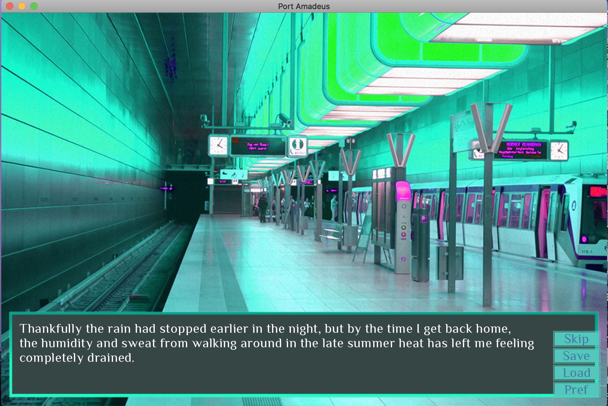
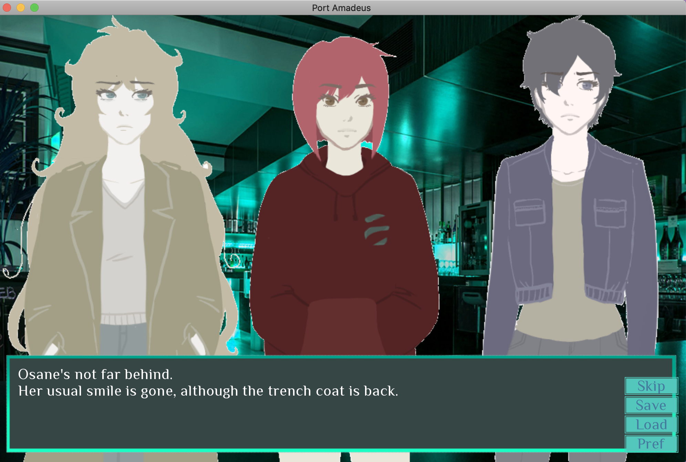
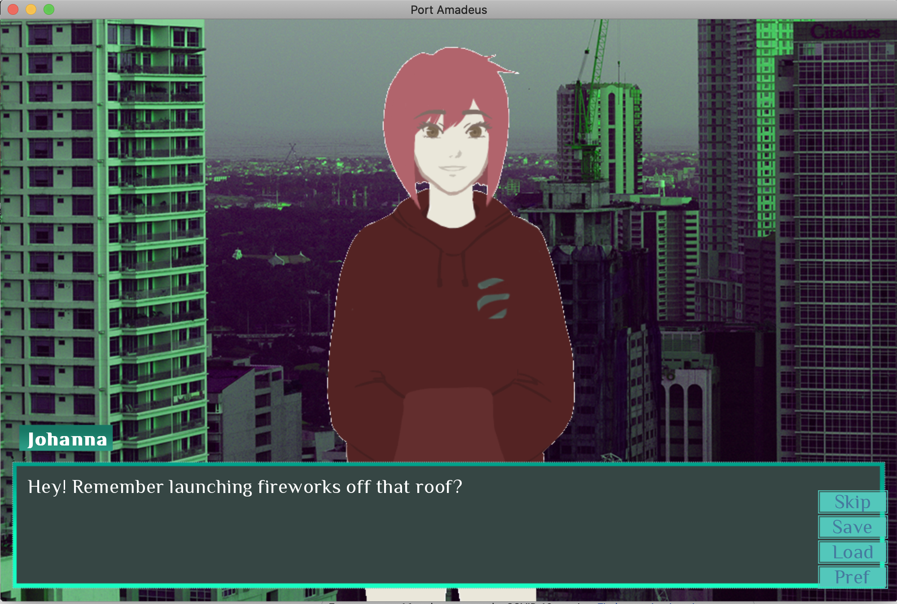
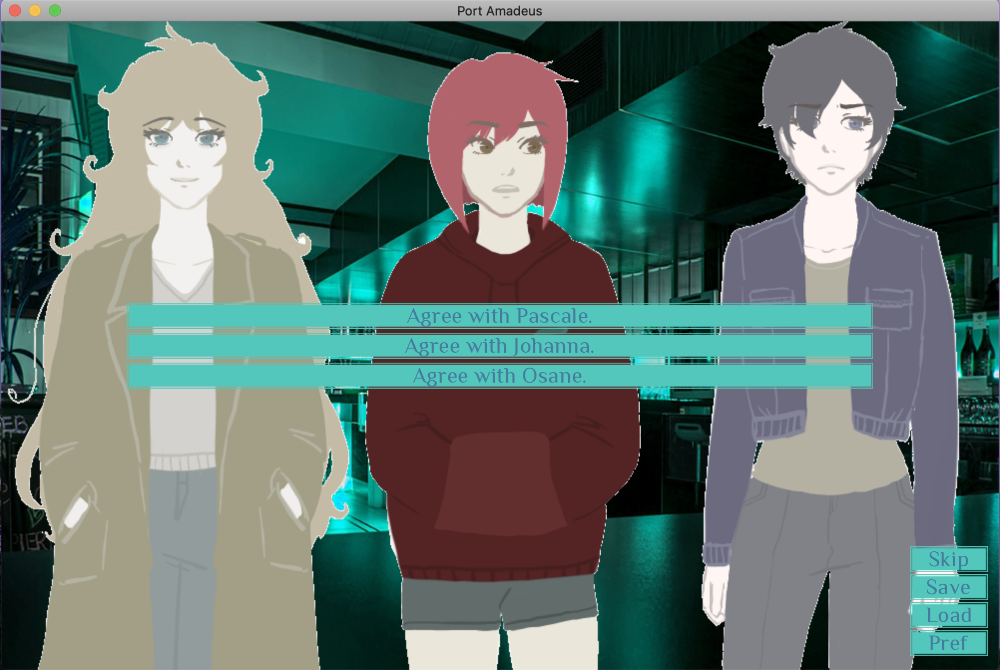

My Portfolio - Aliya Webster
Game Analysis Review
My Kumo Project on Port AmadeusThe game that I selected for the game analysis review is a video game with a network visualization project called Port Amadeus. This game involves a lot of reading with an interesting story plot that I found to be quite intriguing. I have never played a game like this before and found the format to be different from anything I have seen. Not only was the plot changed based on the few decisions made in the game, but your decisions could lead to a bad or good ending. Overall, when playing this game, I learned a lot about the importance of evaluating characters and how much a decision can affect the story’s outcome.

The main character for anyone that plays the game is known as Carina. Carina’s job is to deliver packages and is known as a courier. Her boss, Natia, is the one who makes the assignment of where Carina is to go and you are introduced to both of them in the beginning of the story. Carina lives and works in Ward Zero but does a lot of traveling for her job. One day Natia gives Carina a package to deliver to 35-01 Ablemare Street, Apartment 15H, Sector Alpha, Ward 8.
Carina goes to a simple delivery when she witnesses a murder in the apartment that she is supposed to make the drop off to. This is where the plot picks up and we are left to solve the case at hand. Carina runs home after seeing this and eventually opens the package that was supposed to be delivered that night and finds a chip “DR-1933”. This leads to other characters being revealed in the storyline to help assist Carina in the predicament that she is in. The new characters consist of Pascale, Johanna and Osane who are all important characters in the rest of the story. My favorite part about the game is the unique and futuristic plot. This game has androids that look and function like humans. I think the game does a nice job at throwing in twists and turns just when you think you know where it's headed. The game keeps readers or players invested and if you like novel games, I think this is the perfect game for you. The last aspect that I think deserves praise is the character's involvement and contribution to the game. All of the characters had a purpose and fundamental part that was cool to see develop throughout the game.
Even though I enjoyed many aspects of the game, I did have features of the game that I wasn’t a fan of. The game lacked control for me. I only made a handful of decisions leaving me with not much control over the ending. I also didn’t really care for the setting or the background of the games. They looked general and they didn’t always fit where it said the characters were to be or look aesthetically pleasing to me. I also didn’t care for how the characters looked (as you can see above and down below). The characters didn’t look like they went with the background therefore it didn’t look like they belonged together. The game, as I mentioned before, had a lot of technical or futuristic features that were a big part of the game. It was important to watch and read the text carefully in order to understand it because it would get confusing if you weren't paying attention. There was “Comm” which everyone seemed to have that were something like a cell phone. The game did swear which I didn’t mind but if that is something that bothers you, it would be good to know.
The last thing I wanted to mention about the game is regarding the interaction part of the game that I discussed earlier. The game was predominately heavy to reading but a few times in the story, you would get to choose what course of action you wanted to take (example in picture below). I wish the game allowed us to interact more. These few choices made the determination if you had a good or bad ending which I thought made the game difficult.
